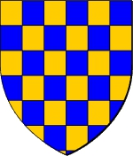

12017692 Lord Robert de Bruce, Lord of Annandale
* 1215 Annandale, Dumfriesshire, Scotland
† 1295-03-31 Lochmaben Castle, Dumfriesshire, Scotland
5:te Lorden av Annadale
Blev högst 80 år
* 1215 Annandale, Dumfriesshire, Scotland
† 1295-03-31 Lochmaben Castle, Dumfriesshire, Scotland
5:te Lorden av Annadale
Blev högst 80 år
24035384 Lord Robert de Bruce
* omkring 1195 Annandale, Dumfriesshire, Scotland
† 1245 Gisborough, Yorkshire, England
4:de Lorden av Annadale
Blev ca 50 år
* omkring 1195 Annandale, Dumfriesshire, Scotland
† 1245 Gisborough, Yorkshire, England
4:de Lorden av Annadale
Blev ca 50 år
48070768 Lord William de Bruce
3:dje Lorden av Annadale
3:dje Lorden av Annadale

24035385 Lady Isobel of Huntingdon
* 1199 Huntingdon, Scotland
† 1251 Scotland
Lady av Annadale
Blev högst 52 år
* 1199 Huntingdon, Scotland
† 1251 Scotland
Lady av Annadale
Blev högst 52 år

48070770 Earl David of Huntingdon
* omkring 1144 Huntingdon, Scotland
† 1219-06-17 Jedburgh, Roxburghshire, Scotland
Greve av Huntingdon
Blev ca 75 år
* omkring 1144 Huntingdon, Scotland
† 1219-06-17 Jedburgh, Roxburghshire, Scotland
Greve av Huntingdon
Blev ca 75 år

96141540 Prince Henry (Dunkeld) of Huntingdon
* omkring 1114 Scotland
† 1152-06-12 Kelso, Roxburghshire, Scotland
Prins av Scotland, Greve av Huntingdon & Northumberland
Blev ca 38 år
* omkring 1114 Scotland
† 1152-06-12 Kelso, Roxburghshire, Scotland
Prins av Scotland, Greve av Huntingdon & Northumberland
Blev ca 38 år

96141541 Queenmother of Scotland Ada de Warenne
* omkring 1120 Surrey, England
† 1178 Huntingdon, Scotland
Drottningmoder, Grevinna av Northumberland
Blev ca 58 år
* omkring 1120 Surrey, England
† 1178 Huntingdon, Scotland
Drottningmoder, Grevinna av Northumberland
Blev ca 58 år